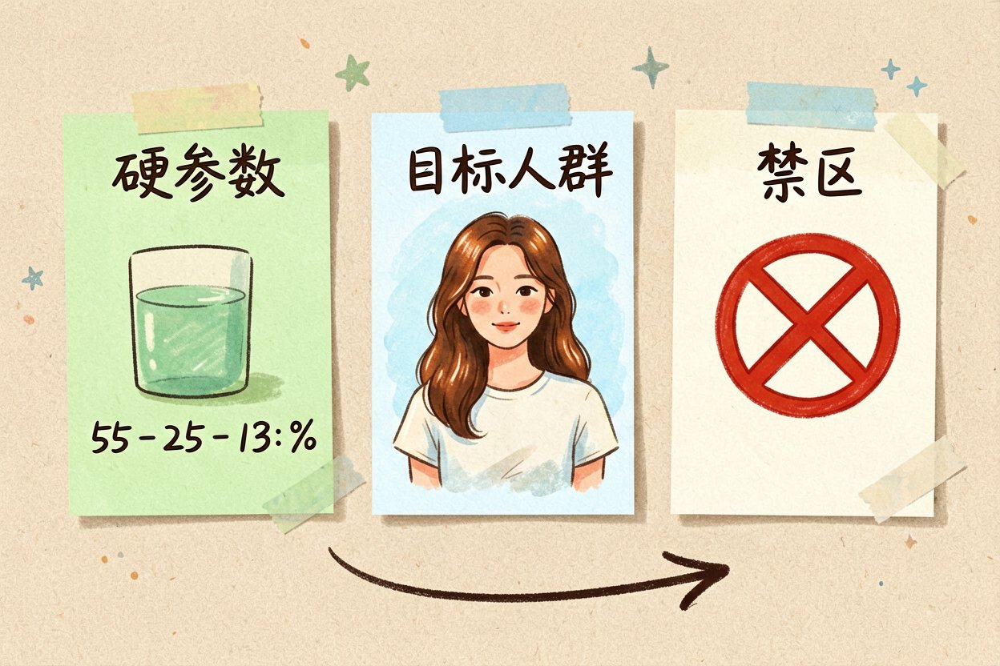
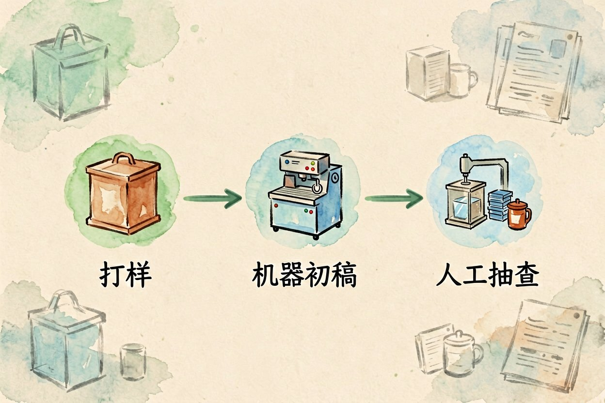
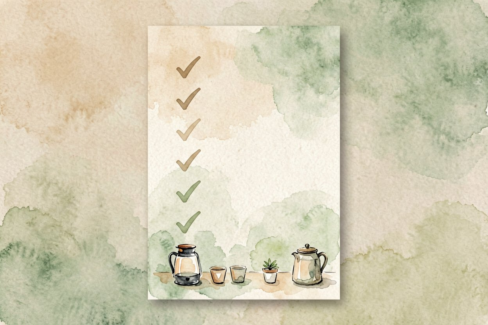
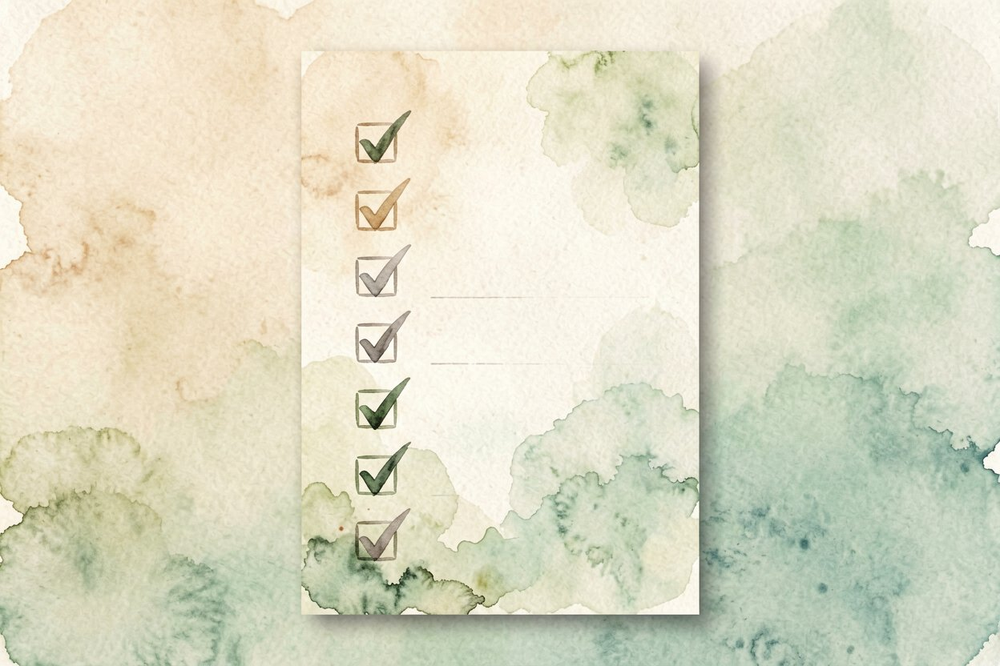

用 AI 写商品描述：把卖点说得让人想买
上架一堆商品却写不出吸引人的描述？把规格表丢给 AI，它能帮你改成有画面感的文案。
AI 写商品描述是什么：一句话解释

AI 写商品描述，就是把你手里的参数表、卖点清单，交给大模型重写成有画面感的销售文案。它不发明事实，只把「容量 500 毫升」翻成「一趟通勤够喝一整天」。
它和AI 小红书文案思路相通，区别在落点：小红书重种草语气，商品描述重转化和信任。选工具时看AI 写作工具对比挑顺手的。
喂给它的三样材料
第一样是硬参数。尺寸、材质、容量、续航，这些必须给准，错一个数就是虚假宣传。
第二样是目标人群。写给谁看，决定语气。给健身族写和给长辈写，同一款保温杯的说法完全不同。
第三样是禁区。哪些词不能用、哪些功效不能乱承诺。把红线先划好，它才不越界。
请根据以下信息写一段电商商品描述（120 字内）：
产品：便携榨汁杯，容量 350ml，续航可做 15 杯，食品级材质
人群：上班带饭的年轻女性
要求：突出轻便和随时喝到鲜榨，不要出现「最」「第一」等绝对化用词。控住风格，别让 AI 瞎编参数
写完后拿给一个没用过这产品的人看，他若说不清哪点打动他，就说明话还没说到位。
给三五个同款产品当样例，AI 才知道你要的是哪种语气，而不是泛泛的促销腔。
定语气最有效。给它一段你满意的老文案当样例，它学得快，比凭空描述风格准得多。
给样例再核数字。它偶尔会顺手把「350ml」写成「500ml」让文案更顺，这种幻觉必须你复核。
对照AI 内容创作指南的节奏，描述里留白、短句、说人话，别堆形容词。去除 AI 写作味的方法也适用这里。
不同平台的语气怎么调

详情页重信任。讲清楚材质、用法、售后，少喊口号，买家才敢下单。
短视频脚本重钩子。前两秒抛痛点，中间给证据，结尾留行动指令，节奏比文采重要。
私域朋友圈重温度。像朋友安利一样写，别像硬广，配一张真实使用图更可信。
大批量上新时的稳妥做法

先打样再铺量。挑三款手动调出满意模板，确认风格和数字都对，再批量跑其余。
再分两道关。机器出初稿，人工只做抽查和数字核对，把精力放在高危品类上。
最后留痕可查。把用的参数和成稿对应存好，万一后续改价改规格，能快速重生成。
还有一个常被忽略的点是标题与描述的分工。标题负责被搜到，要塞进买家会搜的词；描述负责被说服，要讲使用场景，别把关键词硬塞进描述搞得读不通。不同品类重点不同：电器讲参数和安全，食品讲原料和口感，服饰讲版型和搭配，先把品类说清 AI 才好拿捏语气。上新前用两三个真实买家提问去验证描述，能答上来才算写到位。
别让 AI 自己编使用效果，比如「三天瘦五斤」这种它随口就能写。AI 写商品描述只是把你的真实卖点讲得更动人，数字和承诺的底线，必须握在你自己手里。

本文信息核对于 2026-08-14。AI 产品的价格、免费额度与功能变动频繁，实际以各工具官网当前说明为准。